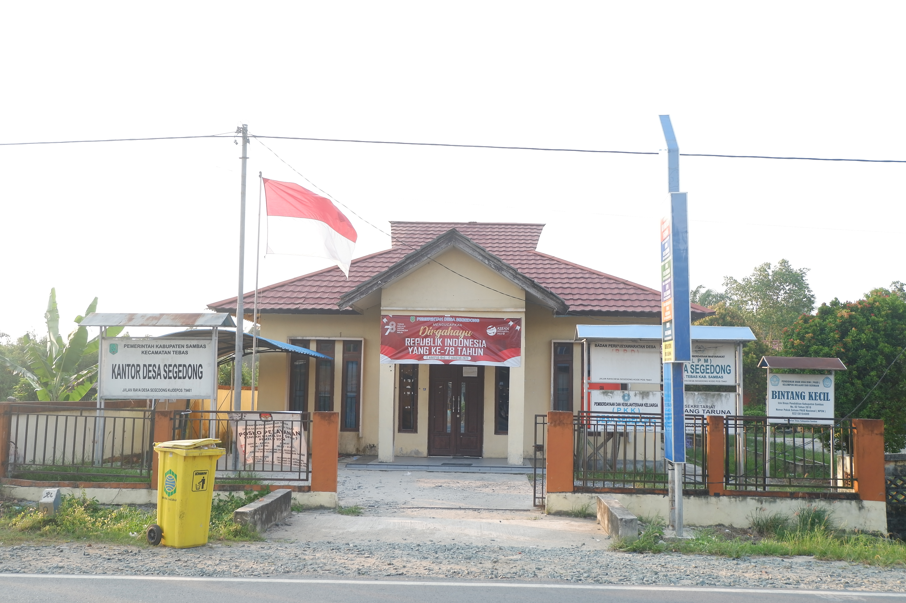
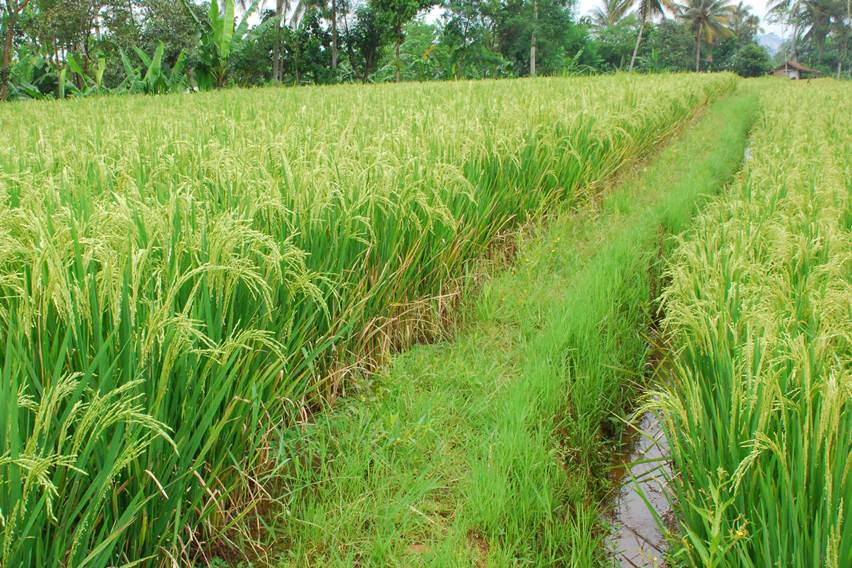
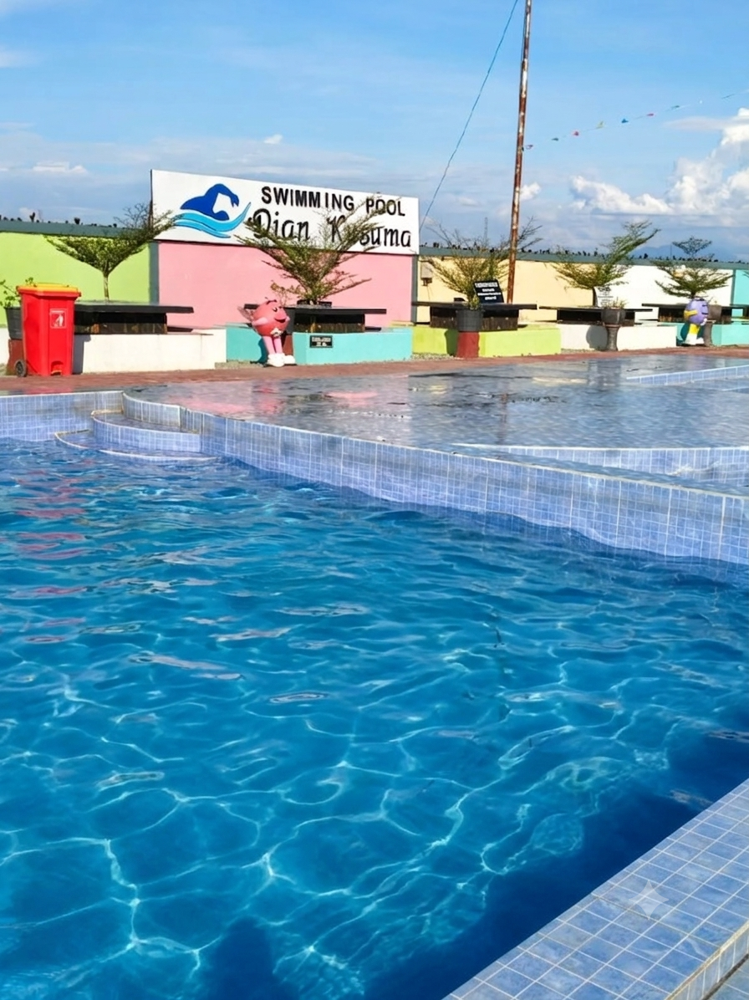
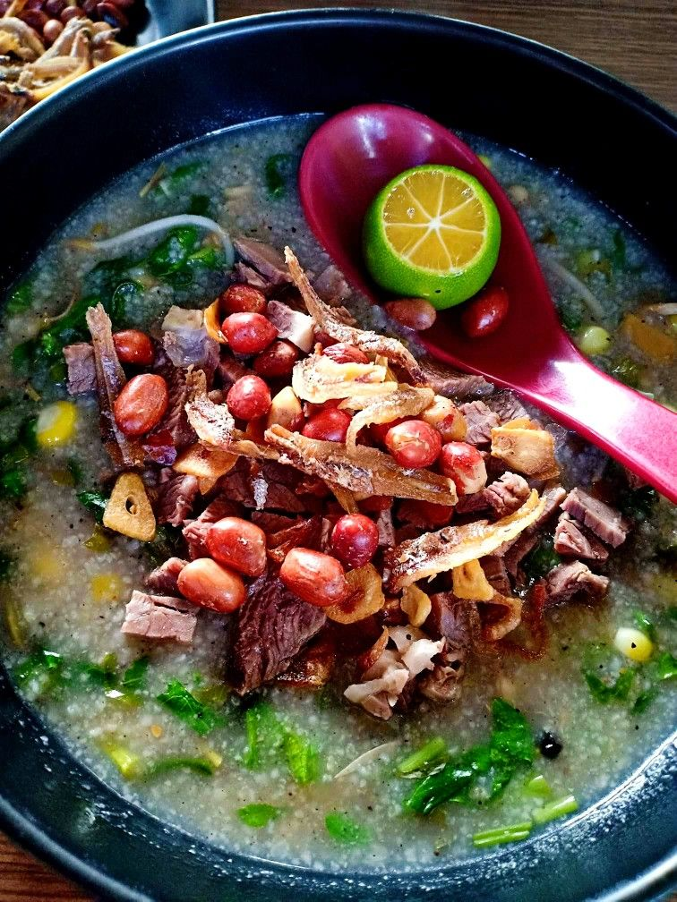

🏛️ Kantor Desa Segedong
Pusat administrasi dan pelayanan masyarakat Desa Segedong yang ramah dan responsif.

Pusat administrasi dan pelayanan masyarakat Desa Segedong yang ramah dan responsif.

Pemandangan alam yang indah dengan udara segar dan suasana pedesaan.

Terdapat 4 kolam, playground dan area untuk berswafoto.

Kuliner tradisional khas Melayu Sambas dengan beragam sayuran dan rempah.
Pusat tata kelola pemerintahan desa dan pusat pelayanan publik bagi seluruh warga Desa Segedong, Kecamatan Tebas.
Jam Pelayanan: Senin - Jumat, pukul 08.00 - 15.00 WIB.
Pemandangan persawahan luas yang memberikan suasana alami, tenang, dan segar khas pedesaan Sambas.
Destinasi wisata air unggulan dengan 4 wahana kolam renang, wahana playground anak, serta gazebo swafoto.
Bubur pedas merupakan makanan tradisional khas Melayu Sambas yang berbahan dasar beras sangrai, kelapa parut, serta puluhan jenis sayuran segar dan rempah alam.